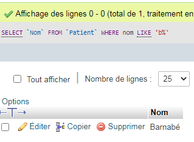
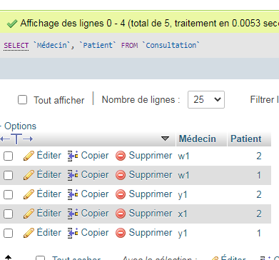
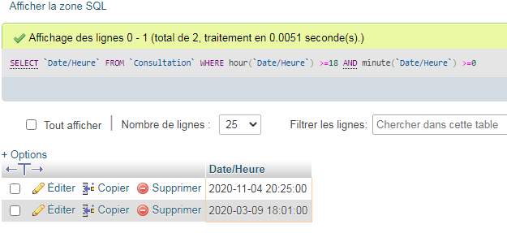
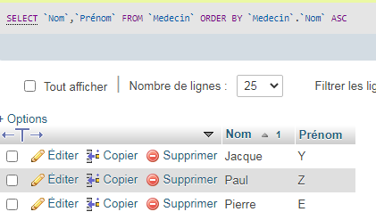
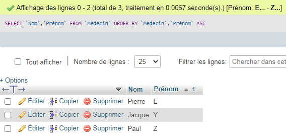
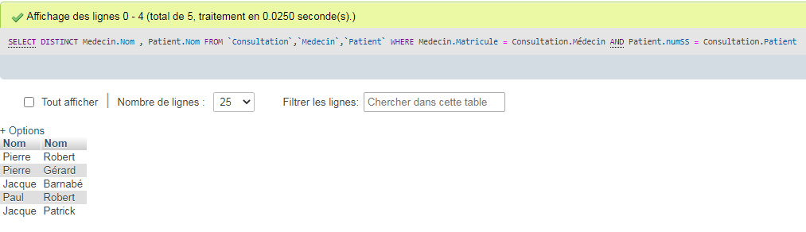
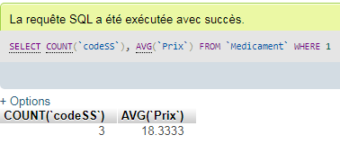

TP 2 :
Relation match tennis :

Relation Consultation Médical :

Relation Routier :

Les patients qui commencent par la lettre B :
Liste des patient après leur consultation :
Les consultations qui ont lieu après 18h :
Les médecin (nom et prénom) par ordre alphabetique :
 Les médecin et leur patient sans doublons :
Les Nombre de médicament référencer et leurs prix moyen :
Le nombre de médicament par prescription : :
Afficher les médicament prescrit par 2 médecin ou plus :
Afficher pour chaque patient la liste de médicament de leur dernière prescription :